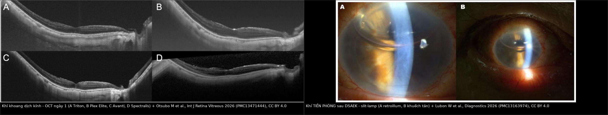
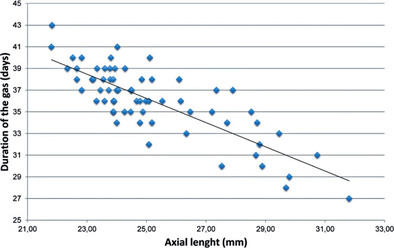
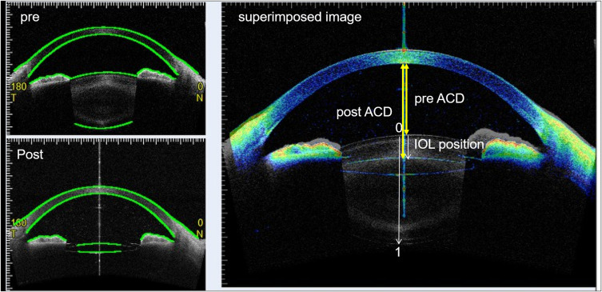
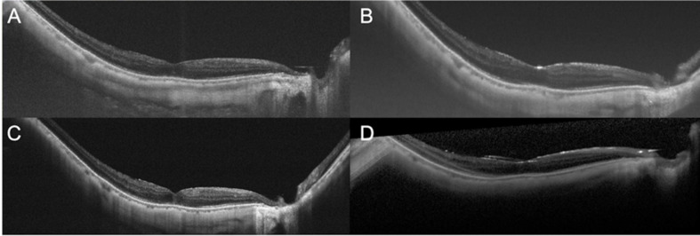
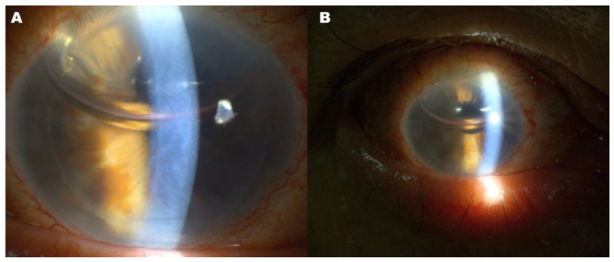

1490 — Sinh trắc và công suất IOL khi mắt còn bóng khí / Biometry and IOL power in the gas-filled eye
Tags: pattern:al-gia pattern:lo-an-cau pattern:bong-khi vung:mat vung:dich-kinh vung:the-thuy-tinh anatomy:dich-kinh protocol:IOLMaster protocol:sinh-trac protocol:sieu-am-A-scan protocol:AS-OCT score:Barrett-Universal-II
Mức chắc chắn (certainty): tổng hợp y văn (literature synthesis) — số liệu lấy từ các nghiên cứu đoàn hệ về phacovitrectomy có khí (357 mắt, 160 mắt, 104 mắt, 22 mắt) và các loạt sinh trắc; các suy luận vật lý (vận tốc/chiết suất) được ghi [suy luận] ngay tại chỗ.
Vì sao bài này quan trọng: 1477 đã chốt nguyên tắc môi trường trong mắt quyết định trục nhãn cầu (axial length, AL) cho dầu silicone; 1863 chốt thời điểm mổ một thì hay hai thì. Bóng khí (air, SF6, C3F8) là môi trường thứ ba, nhưng khác cả hai ở chỗ không thể hiệu chỉnh bằng công thức: khí chắn trục quang, phản xạ gần toàn bộ siêu âm và tự tan theo thời gian — nghĩa là câu trả lời đúng phần lớn là "chờ", và việc phải làm trước là ghi lại AL trước khi bơm khí. Đặt IOL dựa trên số đo trong khí = lệch khúc xạ không dự báo, phải mổ lại đổi IOL.
1. Tổng quan — vì sao một bóng khí làm mọi phép đo AL sai
- Cùng một nguyên lý, ba môi trường. Sinh trắc quang (partial coherence interferometry — PCI, hoặc swept-source OCT — SS-OCT) đo quang trình, rồi chia cho chiết suất quy ước của dịch kính (n = 1,336); siêu âm A-scan đo thời gian bay, rồi nhân vận tốc quy ước 1532 m/s. Cả hai đều giả định khoang sau thể thủy tinh chứa dịch kính. Ba môi trường hay gặp: dịch kính (n = 1,336; v = 1532 m/s), dầu silicone (n = 1,403; v = 987 m/s ở dầu 1000 cSt — 1477), khí (n ≈ 1,0003 cho không khí, ≈ 1,0008 cho SF6/C3F8; v ≈ 343 m/s cho không khí, ~136 m/s cho SF6) [hằng số vật lý].
- TẠI SAO sinh trắc quang đọc NGẮN ở mắt bơm khí (ngược hẳn mắt bơm dầu): quang trình của đoạn khí là
1,000 × d, nhưng máy vẫn chia cho1,336. Vì 1,000/1,336 = 0,749, đoạn khí bị đọc ngắn đi 25,1% chiều dài hình học của nó [suy luận số học, cùng cách tính đã dùng cho dầu ở bài 1477]. Dầu (n cao hơn dịch kính) đọc dài; khí (n thấp hơn) đọc ngắn — hai sai số ngược dấu, nên "kinh nghiệm bù trừ" từ mắt dầu không chuyển được sang mắt khí. - Định lượng sai số: ngưỡng lan truyền 0,1 mm AL ≈ 0,28 D khúc xạ sau mổ. Một bóng khí chiếm 12 mm trục nhãn cầu bị đọc ngắn ~3,0 mm → ~8,4 D [suy luận số học từ hai con số trên]. Đây không phải sai số "chỉnh kính được" — đây là đặt sai công suất IOL.
- Vì sao máy thường không cho số nào cả: bóng khí tạo mặt phân cách khí–dịch phản xạ rất mạnh; khi mặt phân cách cắt ngang trục đo, máy nhận nhiều đỉnh/đỉnh giả hoặc báo chất lượng tín hiệu (QS) không đạt. Khi bóng khí đầy hoàn toàn và bệnh nhân ngồi, khí nằm phía trên nên trục đo có thể đi hoàn toàn trong khí — vẫn sai, nhưng sai một cách im lặng (máy vẫn ra số) [suy luận].
- TẠI SAO A-scan không cứu được: trở kháng âm của khí thấp hơn mô hàng nghìn lần, nên tại mặt khí–võng mạc gần như toàn bộ năng lượng bị phản xạ và không có hồi âm từ võng mạc; giả sử có tín hiệu thì vận tốc khí thấp hơn 4,5–11 lần so với 1532 m/s, nên đoạn khí sẽ bị đọc dài vô lý. A-scan qua khí không phải là phương án dự phòng (khác hẳn mắt bơm dầu, nơi A-scan đặt vận tốc riêng vẫn dùng được).
- Khí còn làm thay đổi khúc xạ của chính mắt: khi khí nằm ngay sau IOL, mặt sau IOL tiếp giáp khí (n ≈ 1,000) thay vì dịch (1,336) → công suất khúc xạ của IOL tăng nhẹ, mắt cận thị thêm trong thời gian bơm khí [suy luận vật lý]. Vì vậy khúc xạ đo được khi còn khí không dùng để tính lại công suất IOL.
- Vì sao đây là việc của CĐHA: siêu âm B-scan và OCT là hai phương tiện hay được gọi khi "mắt đục/không đo được". Nhưng qua khí, B-scan cho đường hồi âm cong rất mạnh kèm bóng lưng (shadowing) — dễ bị đọc thành bong võng mạc; còn OCT qua khí giảm chất lượng theo thiết bị: trên 25 mắt lỗ hoàng điểm ngày 1, điểm chất lượng trung vị (thang 5) là 5,0 (Triton), 5,0 (Plex Elite), 4,0 (Avanti), 2,0 (Spectralis), khác biệt p < 0,001 (Int J Retina Vitreous 2026, PMC13471444). Cùng một mắt, cùng một ngày, "nhìn được hay không" phụ thuộc máy — nên kết luận "không thấy gì = không có bệnh" là sai logic.
2. Mẫu hình + chẩn đoán phân biệt theo vị trí bóng khí và thời điểm (gamut)
Câu hỏi trung tâm không phải "đo bằng máy nào" mà "khí đang ở đâu và sẽ còn bao lâu". Bốn bệnh cảnh quyết định khác nhau:
- A. Mổ phối hợp phaco–cắt dịch kính (khí bơm SAU khi đặt IOL) — sinh trắc làm TRƯỚC mổ, khi chưa có khí. Ở đây khí không làm hỏng phép đo; nó làm hỏng kết quả: IOL bị đẩy ra trước và mắt cận thị hơn dự kiến. Số liệu: 22 mắt có khí → ME −0,82 ± 0,64 D, MedAE 0,47 D, so với −0,07 ± 0,45 D (MedAE 0,20) ở phacovitrectomy không khí và +0,08 ± 0,39 D (MedAE 0,31) ở phaco đơn thuần; mức ra trước của IOL tương quan với độ cận thị (R = 0,53, p < 0,001) (Ophthalmology 2020, PMID 31767435).
- B. Mắt còn khí, cần biết AL để tính công suất (mổ hai thì, hội chẩn tuyến trước). Đo trong khí không dùng được (mục 1). Cứu cánh: AL đo trước lần mổ võng mạc vẫn còn giá trị, vì AL bền theo thời gian — trên mắt bong võng mạc hoàng điểm còn nguyên, đo lặp lúc trước mổ, 1 năm và 2 năm: ICC 0,97, CV 0,45%, TRTSD 0,114 mm; sai số dự báo khúc xạ −0,41 ± 0,67 D và do vị trí IOL, không do AL trôi (Sci Rep 2018, PMC6203743).
- C. Mắt còn khí + khúc xạ "trật" sau mổ. Không đổi IOL trong lúc còn khí. Đo lại khúc xạ sau khi khí tan hết, rồi đánh giá vị trí IOL bằng AS-OCT. Lưu ý phản biện: giả thuyết "bóng khí đẩy IOL ra trước" không giải thích được mọi ca — có ca −1,0 D sau cắt dịch kính + khí mà ACD lại SÂU đi (3,69 → 5,08 mm), tức cơ chế còn bàn cãi (Am J Ophthalmol Case Rep 2018, PMC5956725). Vì vậy đừng mặc định "khí = IOL ra trước" khi chưa đo.
- D. Khí ở TIỀN PHÒNG (sau DSAEK/DMEK, bơm khí nội nhãn). Đây là bóng khí trên đường đo: K và AL đều không đáng tin trong ngày đầu. Nguy hiểm hơn, bóng khí có thể di chuyển ra sau mống mắt mà slit-lamp không thấy: ca DSAEK dùng SF6 25%, ngày 1 slit-lamp "bình thường", AS-OCT đa mặt phẳng phát hiện khí ra sau → can thiệp lại ngay ngày 1 vì nguy cơ góc đóng/secondary angle closure (Diagnostics 2026, PMC13163974).
Gamut "vì sao số đo vẫn sai" (theo cơ chế):
| Cơ chế | Dấu hiệu nhận ra | Hướng sai |
|---|---|---|
| Chiết suất khí ≈ 1,000 thay vì 1,336 | Máy vẫn ra số nhưng AL ngắn hơn AL trước mổ; mắt đục môi trường nhẹ | Ngắn giả −25,1% đoạn khí |
| Mặt phân cách khí–dịch cắt ngang trục đo | Máy báo QS không đạt, nhiều đỉnh, đo 3 lần ra 3 số khác nhau | Không có số, hoặc số ngẫu nhiên |
| Trở kháng khí–mô chênh lớn (A-scan) | Không có đỉnh võng mạc; màn hình chỉ có đỉnh giác mạc/thể thủy tinh | Không đo được |
| Khí trong tiền phòng (DSAEK/DMEK) | Bóng khí lớn trong tiền phòng, có mức khí–dịch | K và AL đều sai; dễ bỏ sót khí sau mống mắt |
| Vị trí IOL thay đổi khi khí tan | ACD nông hơn trong 1–2 ngày đầu, bằng nhau ở 6 tuần; IOL ra trước 1,07 ± 0,20 mm | Cận thị −0,6 đến −0,8 D (không phải AL sai) |
| Bóng khí "chỉ còn 10–20%" | Trên ảnh AS-OCT/slit-lamp thấy bóng khí nhỏ phía trên | Vẫn đủ để cắt trục đo nếu bệnh nhân ngồi/ngửa khác nhau |
3. Bảng so sánh phân biệt (ma trận đối chiếu)

Trái: OCT ngày 1 qua khí ở mắt lỗ hoàng điểm (A Triton, B Plex Elite, C Avanti, D Spectralis) — chất lượng khác nhau rõ rệt, mép ảnh bị mặt phân cách khí cắt. Phải: khí TIỀN PHÒNG sau DSAEK (A retroillumination, B khuếch tán). Ảnh ghép letterbox, không crop/kéo giãn; nguồn + giấy phép trongimages/CREDITS.md.
| Thực thể (entity) | Hình ảnh/chỉ số điển hình | Chốt vào (rule-in) | Chốt loại (rule-out) | Gợi ý xác nhận |
|---|---|---|---|---|
| Sinh trắc quang ở mắt còn khí | AL ngắn hơn AL trước mổ; QS không đạt hoặc số dao động giữa 3 lần đo | Tiền sử bơm khí + AL "ngắn đi" > 0,5 mm mà không có lý do khúc xạ | AL khớp AL trước mổ ± 0,2 mm + 0% khí trên slit-lamp/AS-OCT | Chờ khí tan rồi đo lại 3 lần, QS đạt |
| Sinh trắc quang ở mắt bơm dầu (1477) | AL dài hơn; hai máy quang học lệch 0,80 ± 0,08 mm | AL dài bất thường + tiền sử dầu + chưa bật chế độ mắt bơm dầu | AL khớp AL sau lấy dầu ± 0,2 mm | Bật chế độ mắt bơm dầu; đo lại sau lấy dầu |
| A-scan ở mắt còn khí | Không có đỉnh võng mạc; đỉnh dày sát mặt khí; nếu có số thì AL rất dài | Mất hồi âm võng mạc trên một mắt đã biết bơm khí | Có đỉnh võng mạc rõ, lặp lại được → có thể đo | Không dùng A-scan qua khí; chuyển sang chờ tan |
| B-scan qua khí (cạm bẫy giả bong võng mạc) | Đường hồi âm cong rất mạnh + bóng lưng phía sau; cấu trúc sau khí không thấy | Đường cong thay đổi theo tư thế, trùng mặt khí–dịch trên slit-lamp | Đường cong cố định, dày, di động theo mắt → nghĩ bong võng mạc thật | Khám đáy mắt khi khí tan; OCT sau khi khí < 50% |
| Lệch khúc xạ sau phacovitrectomy có khí | ACD nông 1–2 ngày đầu, sâu dần khi khí tan; AS-OCT đo ACD/IOL | Đo lại 6 tuần: ACD bằng nhóm không khí (p = 0,396) nhưng PE vẫn cao hơn (p = 0,012 Barrett) | ACD/IOL không đổi mà khúc xạ lệch → tìm nguyên nhân khác (K, AL, công thức) | AS-OCT (CASIA2) đo ACD + vị trí IOL; so ảnh trước–sau |
| Khí tiền phòng sau DSAEK/DMEK | Bóng khí lớn tiền phòng; AS-OCT đa mặt phẳng thấy khí sau mống mắt | Khí + IOP tăng/góc hẹp sau ghép nội mô | Khí chỉ ở trung tâm, không ra sau mống mắt | AS-OCT dọc + ngang + xoay; đo lại K/AL khi hết khí |
| AL trôi sau cắt dịch kính (giả thuyết sai thường gặp) | AL 1–2 năm sau mổ không đổi: ICC 0,97, CV 0,45% | AL ổn định + khúc xạ vẫn lệch → do vị trí IOL | AL thay đổi > 0,3 mm → tìm nguyên nhân khác (băng/đai, tiến triển cận thị) | So AL nhiều mốc; đừng "trừ bù" AL |
Ba con số cần nhớ của bài này
- 25,1% — phần đoạn khí bị đọc ngắn trên sinh trắc quang (tỷ lệ 1,000/1,336) [suy luận số học].
- −0,6 đến −0,8 D — độ cận thị thêm thực đo sau phacovitrectomy có khí (−0,82 ± 0,64 D; −0,59 ± 0,34 D với Barrett Universal II), lớn hơn hẳn nhóm không khí.
- 10–14 ngày / 5–6 tuần / 8–10 tuần — thời gian khí tan của SF6 / C2F6 / C3F8 (Int J Retina Vitreous 2024, PMC10840190), tức lịch chờ tối thiểu để đo lại.
4. Protocol + ngưỡng + sơ đồ quyết định
4.1. Trình tự (không nhảy bước)
- Xác nhận khí: loại (không khí / SF6 / C2F6 / C3F8), nồng độ, ngày bơm, % thể tích còn lại (ước lượng trên slit-lamp hoặc AS-OCT: 100% / 50% / 0%), có khí tiền phòng hay không.
- Tìm AL cũ: hồ sơ trước lần mổ võng mạc thường đã có AL (máy sinh trắc của khoa mổ). AL này vẫn dùng được vì AL bền (ICC 0,97 sau 2 năm) — đây là bước rẻ nhất và bị bỏ qua nhiều nhất.
- Không đo sinh trắc quang khi khí còn cắt trục đo. Nếu vẫn đo (vì lý do hành chính), ghi rõ QS + % khí vào phiếu và không dùng số đó để đặt IOL.
- Chờ khí tan rồi đo lại: tối thiểu 10–14 ngày (SF6), 5–6 tuần (C2F6), 8–10 tuần (C3F8); xác nhận 0% khí trước khi đo. Với C3F8 0,7 mL 100%, thời gian khí trung bình 35,6 ± 3,9 ngày và tỉ lệ nghịch với AL:
thời gian (ngày) = 69,14 − 1,33 × AL (mm), r = −0,85, R² = 0,723 (Arq Bras Oftalmol 2025, PMC12818039) — mắt càng ngắn, khí càng lâu tan, nên mắt hyperope/AL 22 mm phải chờ lâu hơn mắt cận thị. - Mổ phối hợp (khí bơm sau): sinh trắc trước mổ, dùng công thức hiện đại (Barrett Universal II/Kane), và nhắm dư hyperopia nhẹ +0,50 D thay vì emmetropia (Clin Ophthalmol 2017, PMC5449115).
- Sau mổ, nếu khúc xạ lệch: chờ khí tan hết, đo lại khúc xạ + AL + AS-OCT vị trí IOL/ACD; chỉ cân nhắc đổi IOL khi số đo lặp lại được sau khi hết khí.
4.2. Ngưỡng định lượng dùng để ra quyết định
| Chỉ số | Ngưỡng | Ý nghĩa thực hành |
|---|---|---|
| Sai số AL | 0,1 mm | 0,28 D khúc xạ — ngưỡng "không đáng kể" |
| Đoạn khí trên trục | 1 mm | Đã gây ~0,25 mm sai AL (~0,7 D) [suy luận] — tức bóng khí nhỏ vẫn đủ sai |
| Chênh AL với AL trước mổ | > 0,5 mm | Nghi số đo sai — không dùng để tính công suất |
| Thời gian chờ đo lại | SF6 10–14 ngày · C2F6 5–6 tuần · C3F8 8–10 tuần | Mốc tối thiểu; xác nhận 0% khí |
| Khí C3F8 (0,7 mL, 100%) | 35,6 ± 3,9 ngày; 69,14 − 1,33 × AL |
Mắt AL ngắn → chờ lâu hơn |
| PE nhóm có khí | −0,82 ± 0,64 D; MedAE 0,47 D | Tư vấn trước mổ: có thể lệch ~0,5 D |
| PE khi dùng BUII + khí (RRD) | −0,59 ± 0,34 D | Cận thị hệ thống, không do công thức |
| Mức ra trước của IOL | 1,07 ± 0,20 mm (khí) vs 0,94–0,95 mm | Giải thích cận thị; không sửa bằng AL |
| Khác biệt giữa công thức | p = 0,546 (Hoffer Q/Holladay 1–2/SRK-T, 357 mắt); p = 0,531 (SRK/T, Hill-RBF, Kane, BUII ở nhóm khí) | Đổi công thức không cứu được — phải đổi thời điểm đo hoặc đích khúc xạ |
| Nhắm khúc xạ ở mắt có khí | +0,50 D | Bù cận thị hệ thống |
4.3. Sơ đồ quyết định
flowchart TD
A[Mắt có bóng khí cần biết AL/công suất IOL] --> B{Khí ở đâu?}
B -->|Tiền phòng - sau DSAEK/DMEK| C[Không đo K/AL ngày đầu; AS-OCT đa mặt phẳng tìm khí sau mống mắt]
B -->|Khoang dịch kính| D{Có AL đo TRƯỚC lần mổ võng mạc?}
D -->|Có| E[Dùng AL cũ - AL bền ICC 0,97; tính công suất + nhắm +0,50 D]
D -->|Không| F{Khí còn cắt trục đo?}
F -->|Có| G[KHÔNG đo sinh trắc quang/A-scan; hẹn theo loại khí]
G --> H[SF6 10-14 ngày / C2F6 5-6 tuần / C3F8 8-10 tuần]
H --> I[Xác nhận 0% khí rồi đo 3 lần, QS đạt]
F -->|Không| I
E --> J[Kết quả lệch khúc xạ sau mổ?]
I --> J
J -->|Có, còn khí| K[Chờ khí tan; đo lại khúc xạ + AS-OCT ACD/IOL]
J -->|Có, đã hết khí| L[Đo lại AL + K + vị trí IOL; xét đổi IOL nếu lệch lặp lại]
K --> L
- Không có hệ RADS cho sinh trắc. Thước đo chất lượng là tỷ lệ mắt trong ± 0,50 D và ± 1,00 D, và với mắt có khí thì thước đo thực dụng là "đã hết khí chưa" — đừng so MAE giữa các quần thể khác bệnh cảnh.

*Đồ thị phân tán: thời gian khí C3F8 (ngày) theo AL (mm) sau bơm 0,7 mL C3F8 100%; đường hồi quy69,14 − 1,33 × AL, r = −0,85, R² = 0,723 — AL càng ngắn, khí càng lâu tan, nên lịch hẹn đo lại phải tính theo AL. Nguồn: Arq Bras Oftalmol 2025 (PMC12818039), CC BY 4.0 — ảnh nguyên bản.*

AS-OCT (CASIA2) đo ACD trước mổ (pre), ACD sau mổ (post) và vị trí IOL trên ảnh chồng (superimposed). Đây là cách khách quan để phân biệt "khúc xạ lệch do vị trí IOL" với "do AL". Nguồn: Clin Ophthalmol 2025;19:2773–2783 (PMC12363976), CC BY-NC — ảnh nguyên bản.5. Biến thể bình thường và cạm bẫy
- "Khí chỉ còn một ít" không có nghĩa là đo được. Sai số tỷ lệ với chiều dài đoạn khí nằm trên trục đo; bóng khí 10–20% ở phía trên vẫn cắt trục đo khi bệnh nhân ngồi, nhưng có thể không cắt khi nằm → cùng một mắt, hai tư thế, hai con số. Ghi tư thế khi đo.
- B-scan qua khí giả bong võng mạc: mặt khí–dịch cho hồi âm cong rất mạnh + bóng lưng; cấu trúc phía sau không thấy được. Đừng kết luận "võng mạc áp" hay "bong tái phát" từ ảnh này; không thấy ≠ không có. Đối chiếu tư thế và khám đáy mắt khi khí tan.
- OCT qua khí phụ thuộc máy: trên cùng 25 mắt, điểm chất lượng trung vị 5,0 (Triton, Plex Elite), 4,0 (Avanti), 2,0 (Spectralis), p < 0,001 (PMC13471444). Kết luận "không đánh giá được lỗ hoàng điểm" có thể chỉ là kết luận của máy yếu, không phải của mắt.
- Bẫy "khí đẩy IOL ra trước" như một định luật: đa số nghiên cứu thấy IOL ra trước và cận thị (1,07 ± 0,20 mm; R = 0,53), nhưng có ca −1,0 D với ACD sâu thêm 3,69 → 5,08 mm (PMC5956725). Cơ chế chưa thống nhất — hãy đo thay vì suy diễn.
- Bẫy "AL dài ra sau cắt dịch kính": AL không trôi (ICC 0,97; CV 0,45%), nên đừng trừ bù AL sau mổ; lệch khúc xạ là do vị trí IOL, và "sửa" bằng AL chỉ làm sai thêm.
- Khí tiền phòng bị bỏ sót: sau DSAEK, slit-lamp có thể "đẹp" trong khi AS-OCT đa mặt phẳng thấy khí sau mống mắt (PMC13163974) — vừa là nguy cơ góc đóng, vừa là lý do K/AL ngày đầu không dùng được.
- Bẫy "đổi công thức cho đúng": ở mắt có khí, không công thức nào trội hơn (p = 0,546 với 357 mắt; p = 0,531 trong nhóm khí). "Đổi công thức" là thay đổi vô ích khi nguồn sai nằm ở thời điểm đo và đích khúc xạ.
- Cạm bẫy giao tiếp: bệnh nhân nhớ "mổ xong nhìn mờ" và quy cho IOL. Cần nói trước: khí còn thì khúc xạ chưa phải khúc xạ cuối, và cận thị nhẹ 0,5 D là kết quả được dự liệu, không phải biến chứng.
6. Tự lượng giá — Blind Quiz
Ca 1 — Nam 62 tuổi, 3 tuần sau cắt dịch kính + C3F8 vì bong võng mạc, nay đục thể thủy tinh, xin mổ phaco. Trên slit-lamp còn bóng khí chiếm khoảng 40% khoang dịch kính. Khoa mổ hỏi: "đo AL luôn được không?"
- Gợi ý lâm sàng: mắt đã mổ võng mạc 1 lần, võng mạc đang áp, khí chưa tan hết.
- Câu hỏi: (1) Có đo sinh trắc quang được không, vì sao? (2) Nếu vẫn đo, số sẽ sai theo hướng nào và bao nhiêu? (3) Phương án nào dùng được ngay hôm nay?
Bấm để hiện đáp án (findings + chẩn đoán)
- Không nên đo: bóng khí cắt trục đo → mặt phân cách khí–dịch cho đỉnh giả/QS không đạt; và cả khi máy ra số, đoạn khí bị đọc ngắn ~25,1% (tỷ lệ 1,000/1,336) [suy luận số học].
- Hướng sai: AL ngắn giả → công suất IOL tính ra cao hơn thực → sau mổ cận thị; 0,1 mm = 0,28 D, nên đoạn khí 12 mm ≈ −3,0 mm ≈ ~8,4 D [suy luận].
- Dùng ngay được: AL đo trước lần mổ võng mạc trong hồ sơ — AL bền (ICC 0,97, CV 0,45% ở 2 năm, PMC6203743); nếu không có, hẹn đo lại khi 0% khí: C3F8 thường 8–10 tuần, và với 0,7 mL C3F8 100% trung bình 35,6 ± 3,9 ngày, mắt AL ngắn còn lâu hơn (
69,14 − 1,33 × AL). - Nguồn số liệu: Sci Rep 2018 (PMC6203743), Int J Retina Vitreous 2024 (PMC10840190), Arq Bras Oftalmol 2025 (PMC12818039), Ophthalmology 2020 (PMID 31767435).
Ca 2 — Cùng một mắt lỗ hoàng điểm, ngày 1 sau mổ còn khí. Bốn máy OCT cho bốn ảnh khác nhau: hai ảnh đọc được, một ảnh mờ, một ảnh gần như không thấy võng mạc.

- Gợi ý lâm sàng: mắt bơm khí 100%, chụp OCT ngày 1 để xác nhận lỗ đã đóng.
- Câu hỏi: (1) Vì sao cùng mắt mà chất lượng khác nhau? (2) Ảnh xấu có được dùng để kết luận "lỗ chưa đóng"? (3) Khi nào nên chụp lại?
Bấm để hiện đáp án (findings + chẩn đoán)
- Dấu hiệu: (A) Triton, (B) Plex Elite, (C) Avanti, (D) Spectralis — cùng mắt, cùng ngày. Điểm chất lượng trung vị (thang 5) lần lượt 5,0 / 5,0 / 4,0 / 2,0, khác biệt p < 0,001 trên 25 mắt.
- Chẩn đoán/ý nghĩa: khí làm giảm chất lượng ảnh theo đặc tính thu nhận của từng máy (không chỉ do bước sóng). Ảnh xấu không đồng nghĩa lỗ chưa đóng.
- Xử trí: dùng máy cho ảnh tốt nhất sẵn có; nếu vẫn không kết luận được, chụp lại khi khí giảm dưới 50% (thực hành trong các nghiên cứu: chờ khí < 50% mới chụp OCT, với C3F8 trung bình 34,1 ± 11,6 ngày, PMC12006618).
- Nguồn ảnh: Otsubo M et al., Int J Retina Vitreous 2026 (PMC13471444), CC BY 4.0 — ảnh nguyên bản.
Ca 3 — Nữ 68 tuổi, ngày 1 sau DSAEK (SF6 25%). Slit-lamp: bóng khí lớn ở tiền phòng "đúng vị trí", mảnh ghép áp. Kỹ thuật viên định đo sinh trắc để tính công suất cho lần phaco sau.

- Gợi ý lâm sàng: mắt đã ghép nội mô, còn khí trong tiền phòng, IOP bình thường.
- Câu hỏi: (1) Vì sao không đo sinh trắc hôm nay? (2) Ngoài chuyện số đo, bóng khí tiền phòng còn nguy cơ gì? (3) Cần làm gì trước khi kết luận "ổn"?
Bấm để hiện đáp án (findings + chẩn đoán)
- Vì sao không đo: khí nằm trên đường đo → K và AL đều sai; kết quả không dùng được để tính công suất.
- Nguy cơ thứ hai: khí có thể di chuyển ra sau mống mắt mà slit-lamp không thấy — ca này AS-OCT đa mặt phẳng phát hiện khí sau mống mắt ngày 1, phải can thiệp lại ngay vì nguy cơ góc đóng/secondary angle closure (Diagnostics 2026, PMC13163974).
- Việc cần làm: AS-OCT dọc + ngang + xoay để xác định vị trí khí; đo lại K/AL khi hết khí; ghi rõ loại khí và nồng độ vào hồ sơ để lần sau không đo nhầm.
- Nguồn ảnh: Luboń W et al., Diagnostics 2026;16:1267 (PMC13163974), CC BY 4.0 — ảnh nguyên bản.
Bài liên quan chéo
- 400 – Tổng quan Mắt & thị giác
- 1477 – Sinh trắc AL & công suất IOL ở mắt bơm dầu silicone (môi trường dầu: sai số ngược dấu với khí)
- 1863 – Đục thể thủy tinh ở mắt bơm dầu: một thì hay hai thì (quyết định thời điểm)
- 1480 – Đục thể thủy tinh sau bóc màng ERM (phacovitrectomy không khí: PE −0,41 ± 0,85 D; IOL ra trước 0,94–1,07 mm)
- 1462 – Sinh trắc & công suất IOL sau ghép giác mạc (sai số phía giác mạc)
- 1410 – Lấy dầu silicone & biến chứng dầu tồn lưu
- 411 – Siêu âm nhãn cầu: bong võng mạc vs xuất huyết dịch kính (đọc B-scan cơ bản)
Ảnh
images/1490_bom-khi_Scatter_Duration-AL_ArqBrasOftalmol2025-F1.jpg— thời gian khí C3F8 theo AL, Arq Bras Oftalmol 2025 (PMC12818039), CC BY 4.0.images/1490_bom-khi_OCT_Day1-4-may_IJRetinaVitreous2026-F3.jpg— OCT ngày 1 qua khí trên 4 máy, Int J Retina Vitreous 2026 (PMC13471444), CC BY 4.0.images/1490_bom-khi_Slitlamp_Khi-tien-phong_Diagnostics2026-F2.jpg— khí tiền phòng sau DSAEK, Diagnostics 2026 (PMC13163974), CC BY 4.0.images/composite_1490_hai-vi-tri-bong-khi.jpg— ảnh ghép letterbox từ hai ảnh CC BY 4.0 ở trên (không crop/kéo giãn).images/1490_bom-khi_ASOCT_ACD-IOL_ClinOphthalmol2025-F1.jpg— AS-OCT đo ACD/IOL, Clin Ophthalmol 2025 (PMC12363976), CC BY-NC — dùng nguyên bản, không đưa vào composite.- Giấy phép từng file:
images/CREDITS.md.
Không dùng để chẩn đoán độc lập khi chưa có người hướng dẫn.